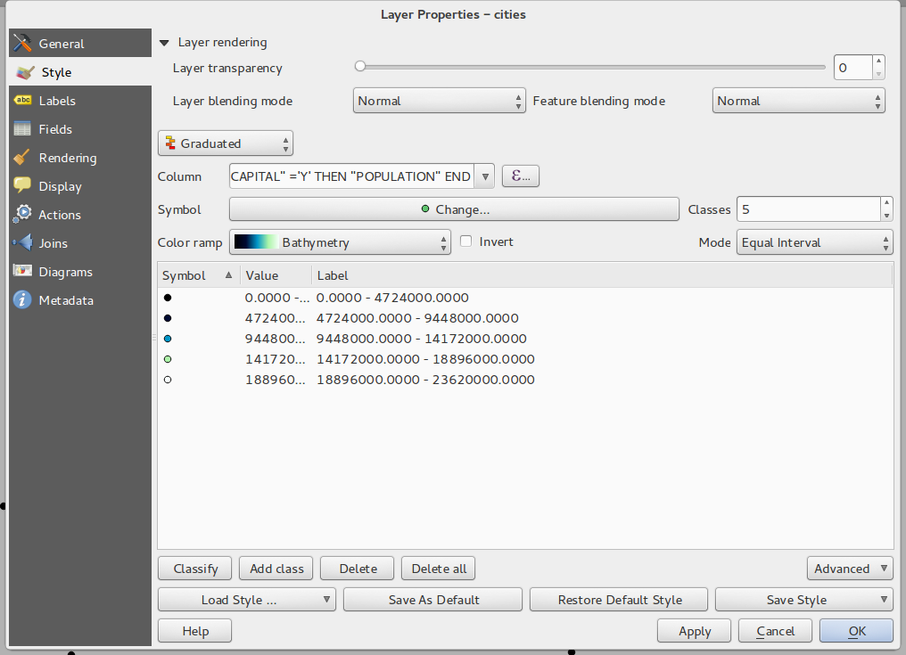

Registo de alterações do QGIS 2.2¶
Registo de alterações para o próximo lançamento do QGIS 2.2.0. A ênfase deste lançamento foi dada essencialmente no aperfeiçoamento e no desempenho - adicionámos várias novas funções, pormenores e melhorias de modo a tornar o interface mais congruente e visualmente mais profissional (esperamos que de mais fácil uso também). O Editor (usado na criação de mapas prontos a imprimir) foi um dos pontos mais focados para torná-lo numa plataforma mais viável na criação de cartografia de qualidade superior.
Sempre que são adicionadas novas funções ao software existe a possibilidade de ocorrerem novos bugs - se encontrar algum nesta versão, por favor comunique-nos através do formulário QGIS Bug Tracker <http://hub.qgis.org>__.
Gostaríamos de agradecer aos programadores, documentadores, testers e a todos aqueles que despenderam o seu tempo e esforço (ou promove o desenvolvimento do programa).
From the QGIS community we hope you enjoy this release! If you wish to donate time, money or otherwise get involved in making QGIS more awesome, please wander along to qgis.org and lend a hand!
Finalmente, nós gostaríamos de agradecer aos nossos patrocinadores oficiais pelo suporte financeiro de valor inestimável que eles fornecem para este projeto:
- Patrocinador de OURO Asia Air Survey, Japão
- Patrocinador de PRATA: G.A.I.A. mbH, Alemanha
- Patrocinador de PRATA: Estado de Vorarlberg , Áustria
- Patrocinador de BRONZE: www.molitec.it, Itália
- Patrocinador de BRONZE: www.argusoft.de, Alemanha
A current list of donors who have made financial contributions large and small to the project can be seen on our donors list.
If you would like to make a donation or sponsor our project, please visit our sponsorship page for details. QGIS is Free software and you are under no obligation to do so. Sponsoring QGIS helps us to fund our six monthly developer meetings, maintain project infrastructure and fund bug fixing efforts.
- Opções da Aplicação e do Projeto
- Fornecedores de Dados
- Digitalização
- Geral
- Compositor de Mapas
- Funcionalidade: Melhorias nos limites do mapa Zebra
- Funcionalidade: Suporte na rotação dos elementos
- Funcionalidade: Melhorias ao adicionar Escala e réguas no compositor
- Funcionalidade: Gerar ficheiro World
- Funcionalidade: Trabalhar com múltiplos itens
- Funcionalidade: Melhorias no Atlas
- Funcionalidade: Melhorias na seleção de itens
- Funcionalidade: Navegação melhorada das composições
- Funcionalidade: Melhoria do estilo das páginas e formas
- QGIS Server
- Simbologia
- Funcionalidade: Suporte no preenchimento de gradientes
- Funcionalidade: Suporte de rótulos para rasters com paletas
- Funcionalidade: Rampas de cor podem ser invertidas
- Funcionalidade: Copiar e Colar no Renderizador baseado em regras
- Funcionalidade: Genaralização de elementos On the fly
- Funcionalidade: Pontos de ancoragem podem ser definidos para marcadores de camada
- Funcionalidade: Mapas temáticos baseados em expressões
- Funcionalidade: Suporte de expressões nos diagramas de símbolos para tamanho e atributos
- Funcionalidade: Regra Else na renderização baseada em regras
- Funcionalidade: Suporte para a grossura interior para os polígonos
- Interface de utilizador
Opções da Aplicação e do Projeto¶
Funcionalidade: Suporte para medição em Milhas Naúticas¶
Para os navegantes que estão no mar, podem agora medir distâncias usando milhas náuticas. Para ativar isto, use a opção do painel Configurações -> Opções -> Ferramentas de Mapa.

Fornecedores de Dados¶
Funcionalidade: Suporte de um para muitas relações¶
Este lançamento suporta a habilidade de definir relações 1:n. As relações são definidas na janela das propriedades do projeto. Uma vez que exista relações para a camada, um novo elemento na vista de formulário (ex.: quando identifica um elemento e abrindo o seu formulário) será listado as entidades relacionadas. Isto fornece uma poderosa forma para exprimir por ex.: o histórico de inspeção do comprimento de uma conduta ou segmento da estrada. Pode encontrar mais sobre o suporte das relações aqui.

Funcionalidade: Ferramenta de Exportação DXF¶
Uma nova ferramenta para exportar DXF foi adicionada ao menu Projeto

Funcionalidade: colar como nova camada vetorial¶
É uma atividade comum nos SIG criar sub-seleções e de seguida criar uma nova camada a partir da seleção. No QGIS pode guardar a seleção como camada a partir da sua seleção, e agora fornece uma nova funcionalidade que permite que possa criar um novo ficheiro ou camada de memória para o que seja na sua área de transferência. Selecione apenas alguns elementos, copie-os para a área de transferência e de seguida faça Editar -> Colar elementos como escolha Nova camada vetorial ou `` Nova camada de memória`` a partir do sub-menu. A melhor parte desta nova funcionalidade é de se tiver alguns elementos Well Known Text (WKT) na sua área de transferência de outra aplicação, pode apenas colá-los no QGIS como nova camada.

Funcionalidade: Legenda gráfica do WMS na tabela de conteúdos e compositor¶
Antes do QGIS 2.2. o fornecedor de dados WMS não era capaz de exibir a legenda na tabela de conteúdos na lista de camadas. Similarmente nenhuma legenda era exibida no compositor de mapas. O QGIS 2.2. foi direcionado para esses problemas.
Ao clicar na legenda da camada irá abrir uma moldura com a legenda na resolução máxima. A legenda irá exibir a informação contextual baseada na sua escala atual. A legenda WMS só será mostrada se o servidor WMS tiver a capacidade de «GetLegendGraphic». A resolução da legenda pode ser modificada, alterando as opções de Tela e Legenda.

Digitalização¶
Funcionalidade: Ferramenta da digitalização de preenchimento de anel¶
Esta nova ferramenta é usada para cortar buracos nos polígonos e automaticamente preenche-los com novos elementos. Se segurar o Ctrl quando finaliza o elemento, os atributos serão armazenados a partir do elemento original.

Geral¶
Funcionalidade: Novas funções de expressão¶
O construtor de expressões irá agora recordar-se das últimas 20 expressões usadas.

Funcionalidade: Colar WKT a partir da área de transferência¶
o QGIS consegue agora colar e criar um novo elemento baseado no WKT que é encontrado na área de transferência. Simplesmente copiar algum WKT e cole numa camada editável. Pode também criar uma nova camada selecionado Editar -> Colar Como -> Nova Camada de Memória
Compositor de Mapas¶
Funcionalidade: Melhorias nos limites do mapa Zebra¶
Pode agora definir as cores do limte da Zebra no elemento mapa no compositor de mapas.

Funcionalidade: Suporte na rotação dos elementos¶
Cada tipo de elemento no compositor pode ser rodado, incluindo as escalas gráficas, tabelas e legendas. Por exemplo, pode rodar o rótulo na composição para que encaixe melhor no layout da sua página (como está ilustrado). Foi também melhorado o rescalonamento dos elementos rodados.

Funcionalidade: Melhorias ao adicionar Escala e réguas no compositor¶
A aparência das réguas foi melhorada através do ajustamento lógico da escala e pela adição das divisões mais pequenas da régua, e por possibilitar as réguas verticais de usar texto rodado. Tem também uma nova ação no compositor para esconder/mostrar as réguas. Agora pode facilmente ampliar a 100% à escala da página usando a nova ferramenta Ampliar a 100% na barra de ferramentas. A janela do compositor permite agora rapidamente trocar a escala da página através do novo caixa de combinação de escala na barra de estado. Adicionalmente, um novo indicador foi adicionado para mostrar a posição exacta do pixel do seu cursor. Os botões Fechar e Ajuda foram removidos do fundo da janela do compositor para dar-lhe o máximo de espaço do ecrã para trabalhar com as suas composições.

Funcionalidade: Gerar ficheiro World¶
No compositor pode agora criar mapas georeferenciados! Assegure-se apenas que escolhe o elemento de mapa correto no Separador Composição e de seguida exporte o seu mapa como ficheiro PNG. Será guardado acompanhado com um ficheiro world, permitindo carregar a sua composição exportada no QGIS como camada raster.

Funcionalidade: Trabalhar com múltiplos itens¶
Foi melhorada a forma de mover e redimensionar vários itens ao mesmo tempo. Pode segurar a tecla Shift enquanto redimensiona para manter a proporção do item enquanto redimensiona, ou segurar a tecla Control para redimensionar a partir do centro do item. Existe uma tecla de atalho para mover os itens, nesse caso segure a tecla Shift enquanto move o item no sentido horizontal e vertical e segurando a tecla Control temporariamente desativa a atracão do item. Podem também segurar a tecla Shift enquanto pressiona a tecla do cursor do rato para mudar uma grande quantidade de itens selecionados.
Funcionalidade: Melhorias no Atlas¶
Pode agora pré-visualizar as páginas individuais do mapa do atlas que serão gerados no compositor. No modo de pré-visualização do atlas pode imprimir a página atual sem imprimir o atlas inteiro. Pode também mexer a extensão do mapa ou mudar a escala para cada elemento enquanto pré-visualiza a página do atlas. As configurações do mapa do atlas foram movidas do painel atlas para o painel das propriedades do mapa, portanto agora mais do que um mapa pode ser controlado pela geração de atlas. Existe uma nova opção para automaticamente centrar a extensão do mapa, que pode tornar-se interessante quando cria atlas baseados em mapas. Está disponível mais informação de contexto para que possa ajustar a sua simbologia baseada num elemento do atlas atual ou não. Veja este artigo para mais informação.

Funcionalidade: Melhorias na seleção de itens¶
Pode agora selecionar mais que um item clicando e arrastando a caixa para os selecionar, e os seus atalhos para adicionar à seleção (mantendo premida a tecla Shift enquanto arrasta), subtraindo a partir da seleção (mantendo premida a tecla Control enquanto arrasta) e trocando para o modo de seleção «dentro» (mantendo premida a tecla Alt enquanto arrasta). Com a tecla Shift premida clique num item já selecionado para removê-lo da seleção. Existem também atalhos e itens do menu para selecionar todos os itens, limpar a seleção e inverter a seleção. Agora também é possível selecionar itens que estão escondidos debaixo dos outros itens clicando na tecla Control e com o rato num item, ou usando o «Selecionar o próximo item acima/abaixo» no menu Editar do compositor.
Funcionalidade: Melhoria do estilo das páginas e formas¶
Pode agora controlar o estilo do fundo da composição usando um conjunto de opções de simbologias do QGIS. É agora possível exportar as composições com fundo transparente (ou semi-transparente). Os itens de forma (retângulos, triângulos e elipses) pode também se estilizados usando as mesmas opções que as camadas de polígono do mapa . Pode também estilizar o fundo da página ou formas com configurações definidas por dados baseados no elemento atual do atlas! Existe também uma nova opção para arredondar os cantos das formas retangulares.
QGIS Server¶
Funcionalidade: Suporte WCS adicionado ao QGIS Server¶
O QGIS-Server já suporta os padrões: Serviço de Mapas Web (WMS versão 1.3.0 e 1.1.1) e Serviço de Elementos Web (WFS versão 1.0.0) e Serviço de Elementos Web com Transação (WFS-T). Com este novo lançamento do QGIS, pode agora partilhar camadas rasters usando o padrão de Serviço de Cobertura Web (WCS versão 1.0.0)).

Simbologia¶
Funcionalidade: Suporte no preenchimento de gradientes¶
O novo gradiente de preenchimento de elementos permite-lhe criar melhor cartografia. O elemento tem numerosas opções fornecendo grande flexibilidade da forma como aplica os gradientes aos seus elementos. Isso inclui:
- Duas cores ou rampas baseadas em preenchimentos
- Enquadramento ou objeto baseado na origem para os seus gradientes
- Criação de gradientes a partir do centróide do elemento
- tipos de gradientes cónicos, lineares e radiais
- Opções definidas por dados (para usar uma expressão ou uma coluna da tabela) para todas as propriedades do gradiente.
Leia mais sobre como usar os preenchimentos de gradientes aqui.

Funcionalidade: Suporte de rótulos para rasters com paletas¶
Os rasters que usam uma paleta de cores fixa. (tipicamente para ex.: mapa de uso do solo) pode agora ter rótulos de etiquetas atribuídos que serão exibidos na legenda do mapa e na legenda do compositor.
Funcionalidade: Rampas de cor podem ser invertidas¶
Uma nova opção foi adicionada à janela de simbologia que lida com as rampas de cor para que permita inverter a rampa de cor quando é criada.

Funcionalidade: Copiar e Colar no Renderizador baseado em regras¶
No renderizador baseado em regras, pode agora clicar com o direito do rato na regra e copiar e colar a regra como nova regra.

Funcionalidade: Genaralização de elementos On the fly¶
O QGIS 2.2 introduz suporte para generalização em elementos em tempo real. Isto pode melhorar os tempos de renderização quando desenha elementos complexos em escalas pequenas. Esta funcionalidade pode ser ativada ou desativada nas configurações da camada. Isto também uma nova configuração global que ativa a generalização por defeito para novas camadas adicionadas. Nota: A generalização de elementos pode conter em alguns casos, artefactos na sua renderização. Isto inclui slivers entre polígonos e renderização sem precisão quando usa um afastamento baseado em símbolos das camadas.

Funcionalidade: Pontos de ancoragem podem ser definidos para marcadores de camada¶
Poderá agora quando define a simbologia com camadas de marcadores (ex.: camada de pontos simbolizada com marcadores SVG) especificar que parte da imagem deve corresponder ao “ponto de ancoragem”. Por exemplo pode indicar que o canto inferior esquerdo da imagem de coincidir com a posição do elemento. Pode também usar as propriedades definidas por dados para ficar propriamente definida na renderização baseada num atributo na tabela de atributos para essa camada (ou uma expressão arbitrária).

Funcionalidade: Mapas temáticos baseados em expressões¶
Mapas temáticas de Categorias ou por Gradiente pode ser agora criados usando o resultado de uma expressão. No diálogo das propriedades para camadas vetoriais a escolha de atributo foi aumentado com um construtor de expressões. Portanto, agora não necessita de escrever o atributo de classificação numa nova coluna na sua tabela de atributos se quiser fazer uma classificação por atributos através de múltiplos campos, ou numa fórmula.

Funcionalidade: Suporte de expressões nos diagramas de símbolos para tamanho e atributos¶
Pode agora usar uma expressão para definir o tamanho e os atributos quando usa as capacidades de diagrama do QGIS. Para mais informação veja o Pull Request aqui Pull 1039

Funcionalidade: Regra Else na renderização baseada em regras¶
O renderizador baseado em Regras agora suporta a regra ELSE que irá ser executada se nenhuma ou outras regras desse nível coincidirem. As regras Else podem ser embrulhadas como outras regras.
Um exemplo pode ser:
type = 'água' (style grey)ELSE (style red)
Funcionalidade: Suporte para a grossura interior para os polígonos¶
Foi adicionado suporte para espessura do polígono para ser limitado ao interior do polígono (para que não se sobreponha ao polígono vizinho).
Mais informação desta funcionalidade pode ser encontrada na segunda parte deste artigo.

Interface de utilizador¶
Funcionalidade: Melhorias nas janelas de diálogo das propriedades¶
Todos os diálogos de propriedades têm os seus menus atualizados portanto parecer mais lisa com um barra lateral colorida inversa. Isto é puramente cosmético mas torna mais fácil saber o contexto atual do diálogo.

Funcionalidade: Melhoramento no diálogo de expressões¶
Fizemos alguns ajustes no diálogo de expressões - os utilizadores podem esconder os botões de operadores. Existe também barras separadores entre a lista de funções e a área de ajuda das funções, e entre a expressão e a área de lista de funções. Veja o pull request original para mais detalhes.

Funcionalidade: Novas combinações de teclas¶
Nós atualizámos os atalhos do teclado no QGIS para tornar mais eficiente tarefas repetitivas.
ctrl-d- Remove as camadas selecionadas da tabela de conteúdos>- Seleciona o próximo vértice quando usa a ferramenta de nós<- Seleciona o vértice anterior quando usa a ferramenta de nós- Teclas
DeleteouBackspace- apague os elementos selecionados (pode retroceder estas ações), ou um nó quando usa a ferramenta de nós. F5atualiza o enquadramento (em vez de ctrl-r)
Veja também Problema 9094 e Pull Request 1010 para mais detalhes.